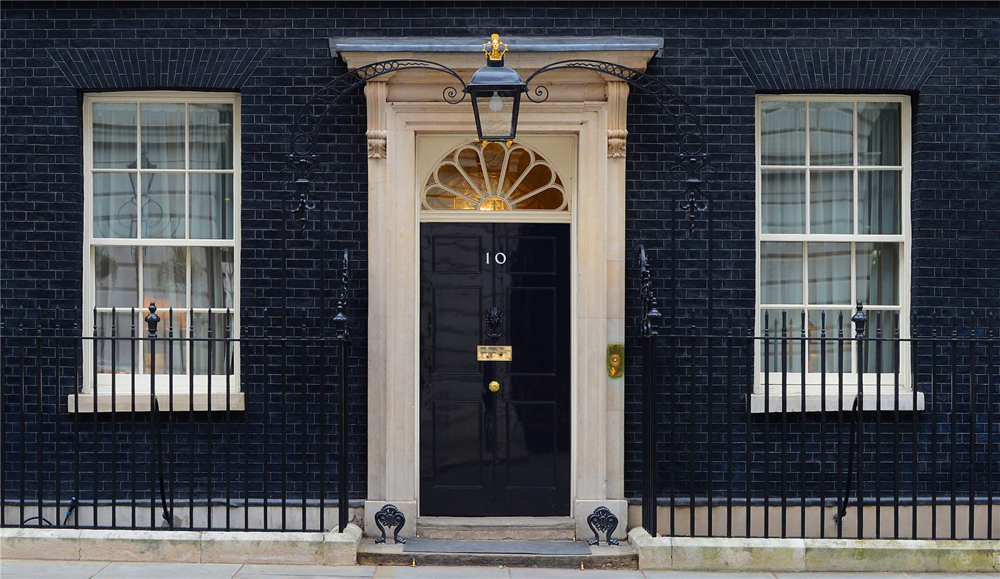

트럼프, 아일랜드 통일에 "환영"… 포클랜드 분쟁 중재 의사도
도널드 트럼프 미국 대통령이 아일랜드 통일을 환영한다는 뜻을 밝히고, 포클랜드 제도를 둘러싼 분쟁 해결을 돕겠다는 의사도 내비쳤다고 자유시보가 전했다.
유종한 기자 · 2026.09.13
橋국제

도널드 트럼프 미국 대통령이 아일랜드 통일을 환영한다는 취지로 말하고, 포클랜드 제도를 둘러싼 분쟁 해결을 돕겠다는 의사를 밝혔다고 자유시보가 12일 보도했다.
광고 문의 · 300×250아일랜드 통일 문제는 북아일랜드의 지위와 연결된 사안이다. 1998년 벨파스트 합의는 주민투표를 통해 장래 지위를 결정하도록 하는 절차를 규정하고 있다.
영국 정부는 주민투표 실시 여부를 판단하는 권한을 북아일랜드 담당 장관이 갖는다는 기존 해석을 유지해 왔다. 실시 요건에 대한 해석은 정치권에서 논쟁 대상이다.
포클랜드 제도는 영국이 실효 지배하고 있으며 아르헨티나가 영유권을 주장한다. 1982년 무력 충돌 이후에도 양국의 입장 차이는 그대로 남아 있다.
제3국의 중재 제안은 과거에도 나온 적이 있으나, 영국은 주민의 자기결정권을 근거로 협상 대상이 아니라는 태도를 유지해 왔다.
미국은 두 사안 모두에서 전통적으로 신중한 입장을 취해 왔다. 영국과의 동맹 관계와 아일랜드계 유권자층을 동시에 고려해야 하기 때문이다.
이번 발언이 실제 외교 절차로 이어질지는 미지수다. 관련국들이 공식 반응을 내놓는지가 1차 가늠자가 될 전망이다.